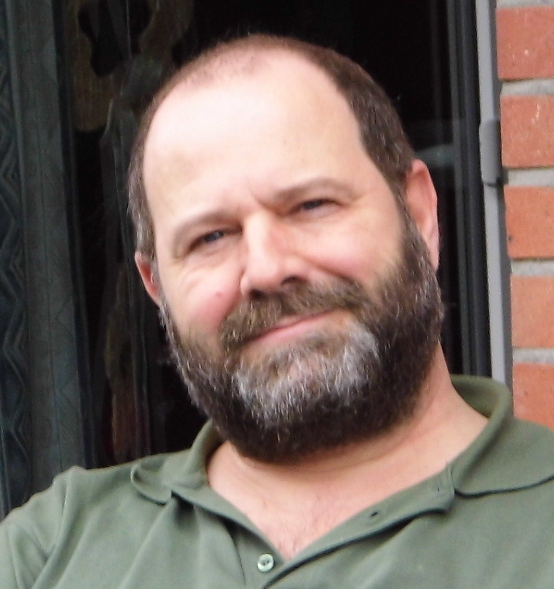
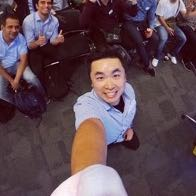
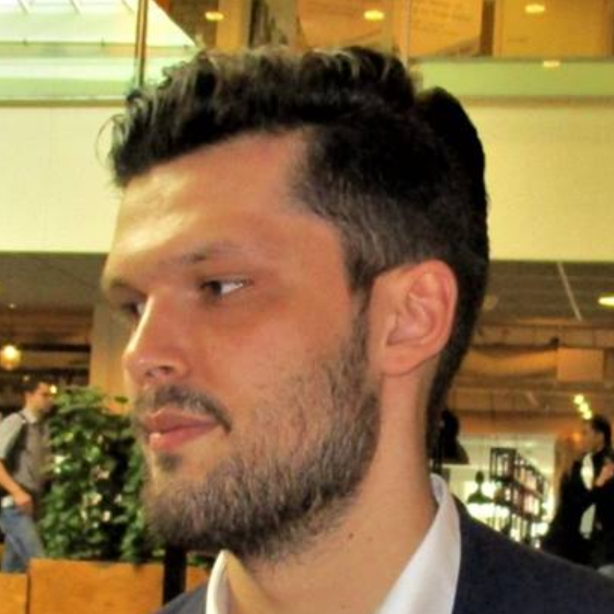

Community!
Great speakers from the community.
Training Day!
Workshops will be hosted on August 31st.
Open Source Day!
Let's contribute together on September 2nd.
Cheap!
Conference tickets are only 40 euros.
Great Location!
Walking distance from Amstel station.
Great Food!
And amazing coffee too.
What, Where, When, How
Speakers
The call for speakers is now closed. Submissions will be assessed until August 2nd. On August 3nd the latest speakers will be notified whether their talk is accepted. Program could always change due to unforseen circumstances.
Keynote Speakers
Mara Averick
Speakers
Kirill Müller
Jeroen Groot
Youssef El Bouhassani
Longhow Lam
Rita Giordano
Edwin Thoen
Suzan Baert
Olga Sholderer
Thomas Hütter
Pieter Marcus

Jo-Fai Chow
Bob Jansen
Rianne Schouten
Workshops
The workshops are going to happen on the 31st of August from 14:00 till 17:30. There will be two workshops, one about dplyr and the other about scraping. Afterwards, there's a small social event with beers and pizza's. Note that the workshops require an extra ticket and these workshop take place at the Uber Amsterdam office.
Gilian Ponte
Nick Jones

Program
| Time | Program | Speaker |
|---|---|---|
| 8.15-8.45 | Registration | |
| 8.45-9.00 | Welcome & opening | |
| 9.00-9.45 | Keynote | Mara Averick That's not [data] science! |
| 9.45- 10.30 | Speaker 2 | Kirill Müller DBI: Recent developments in R's database interface |
| 1030-1100 | coffee break | |
| 11.00- 11.45 | Speaker 3 | Suzan Baert Getting more out of dplyr |
| 11.45- 12.30 | Speaker 4 | Dominik Krzemiński Making Shiny shine even brighter |
| lunch | ||
| 13.30- 14.15 | Speaker 5 | Edwin Thoen An exploration of NSE and tidyeval |
| 14.15- 15.00 | Speaker 6 | Thomas Hütter 50 ways to show your data |
| break | ||
| 15.30- 16.30 | Lightning talks |
|
| break | ||
| 16.40- 17.40 | Lightning talks |
|
| 7:40- 19.00 | Drinks, Food & NetwoRking |
Open source day
On sunday, everyone who wants to work on an open source project is welcome in the Godatadriven office. We provide coffee and an introduction to git and github for interested people. Always wanted to build a package? Now is the time!
Registration
- Conference tickets: €39.95. Attend a full day of R talks on Saturday September 1st!
- Workshop day tickets: €19.95. Join 3 hours of workshops on Friday August 31st in the afternoon.
- Combi tickets: €49.95. Get access to the workshops on Friday August 31st as well as the conference on Saturday September 1st.
- Open source day: free. Registering is all you need to do to become an R open source contributor!
Sponsors
These cool companies wanted to give something back to the community by sponsoring:
Location Sponsor
Workshop Sponsor
Sticker Sponsor

Sticker Sponsor

Committee
Tess

Steven

Ilse

Roel

Janine

Vincent

Code of Conduct
satRdays is dedicated to providing a harassment-free and inclusive conference experience for all in attendance regardless of, but not limited to, gender, sexual orientation, disabilities, physical attributes, age, ethnicity, social standing, religion or political affiliation.
We do not tolerate harassment of participants (including organisers and vendors) in any form. Sexual innuendos and imagery are not appropriate for any conference venue, including presentations.
Anyone violating these rules may be given warning or expelled from the conference (without a refund) at the discretion of the conference organisers.
Our code of conduct/anti-harassment policy can be found here.
Workshop Location
Uber HQMeester Treublaan 7, Amsterdam
Main Event Location
GoDataDriven HQWibautstraat 202, Amsterdam